Sunroof Module Assembly Replacement
Sunroof Module Assembly Replacement
Tools Required
* J 39040 Window Remover Kit
* Support Stands
* Pneumatic Adhesive Dispensing Gun
* 127/EZ Plastic Fusor Adhesive
Removal Procedure
Caution: To avoid personal injury when exposed to plastic structural installation adhesive while grinding/cutting/applying repair material, you must work in a properly ventilated area, wearing an approved respirator, eye protection, rubber gloves, protective clothing, apply protective cream to any exposed skin, remove any mixture that comes into contact with skin, wash skin with cold water to remove adhesive and follow the repair material manufacturer's instructions.
1. Use a sheet of plastic covering to protect the upper dash pad, the seats, and the carpeting.
Important: Before beginning this repair, refer to Sheet Molded Compound (SMC) Panel Bonding () for proper adhesive, applicator preparations, and general information.
2. Remove the front seats. Refer to Bucket Seat Replacement (Bucket Seat Replacement) .
3. Remove the secondary seats. Refer to Rear Seat Replacement (Rear Seat Replacement) .
4. Remove the folding seats. Refer to Rear Number 2 Folding Seat Replacement (Rear Number 2 Folding Seat Replacement) .
5. It is only necessary to lower the headliner. Only do those step in headliner replacement that will lower the headliner enough to gain access to the part. Refer to Headlining Trim Panel Replacement (Service and Repair) .
6. Disconnect the electrical wiring harness connectors at the C-pillar area.
7. Remove all of the sunroof windows. Refer to Sunroof Window Replacement (Front) (Service and Repair)Sunroof Window Replacement (Rear Vent) (Service and Repair)Sunroof Window Replacement (Center) (Service and Repair)Sunroof Window Replacement (Rear Stationary) (Service and Repair) .
8. Remove the luggage rack carrier. Refer to Luggage Carrier Rivet Nut Replacement (Luggage Carrier Rivet Nut Replacement) .
9. Remove the roof exterior trim covers. Refer to Sunroof Exterior Trim Cover Replacement (Front) (Sunroof Exterior Trim Cover Replacement (Front))Sunroof Exterior Trim Cover Replacement (Rear) (Sunroof Exterior Trim Cover Replacement (Rear))Sunroof Exterior Trim Cover Replacement (Rear Sides) (Sunroof Exterior Trim Cover Replacement (Rear Sides))Sunroof Exterior Trim Cover Replacement (Front Sides) (Sunroof Exterior Trim Cover Replacement (Front Sides)) .
10. Disconnect the rear drain hoses from the module drain spouts. Refer to Sunroof Housing Rear Drain Hose Replacement (Removal and Replacement) .
11. Remove the windshield. Refer to Adhesive Installation of Stationary Windows (Adhesive Installation of Stationary Windows) .
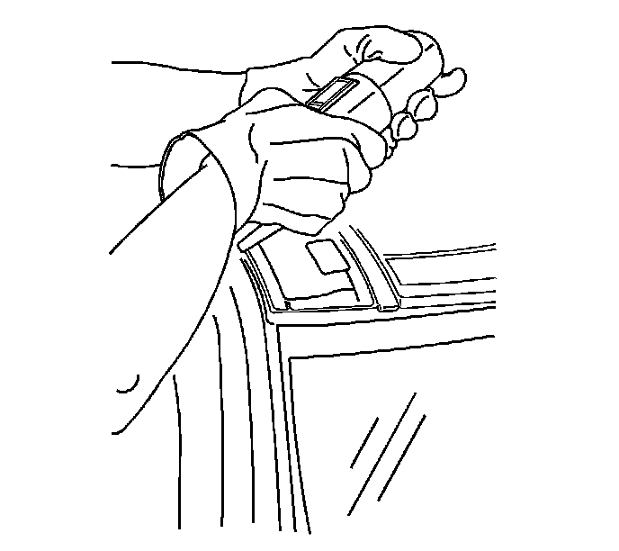
12. Using J 39040 with the serrated U-shaped blade, or equivalent, start at the front edge of the sunroof module and carefully cut the adhesive which retains the sunroof module to the pinch-weld flanges.
Important: Use clean water to lubricate the blade.
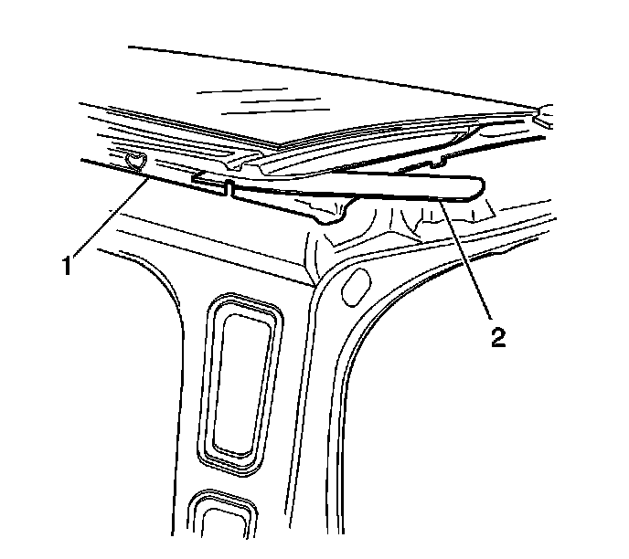
13. Add wedges (2) under the sunroof module (1) as required to relieve the pressure on the cutting blade.
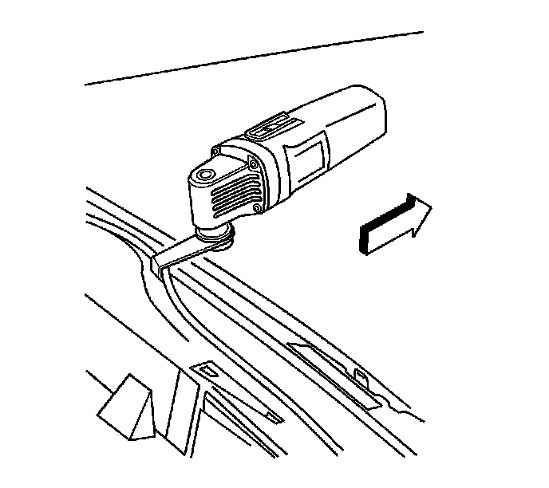
14. Cut around the entire perimeter of the sunroof module in order to release the adhesive bond.
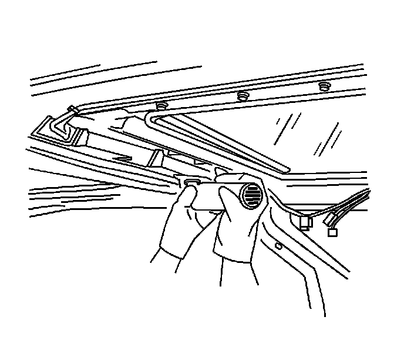
Important: Cut the adhesive on both sides of the roof bow. The blade is not long enough to cut through the width of the adhesive on the roof bow.
15. Using J 39040 with the circular blade, carefully cut the adhesive retaining the sunroof module to the roof bow.
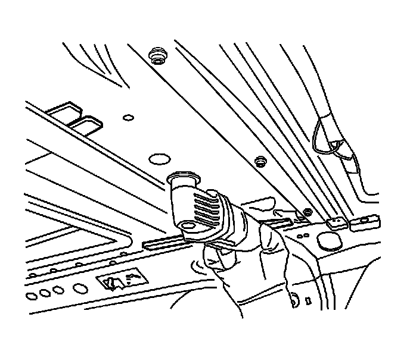
16. Using J 39040 with the long straight blade, carefully finish cutting through the adhesive retaining the sunroof module to the roof bow.
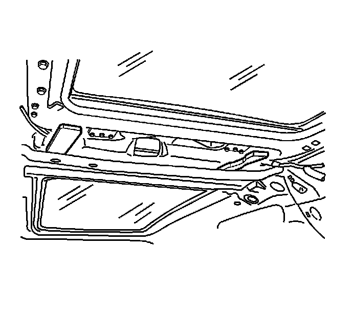
17. Add wedges as needed to separate the sunroof module from the roof bow.
18. With the aid of an assistant, remove the sunroof module from the body.
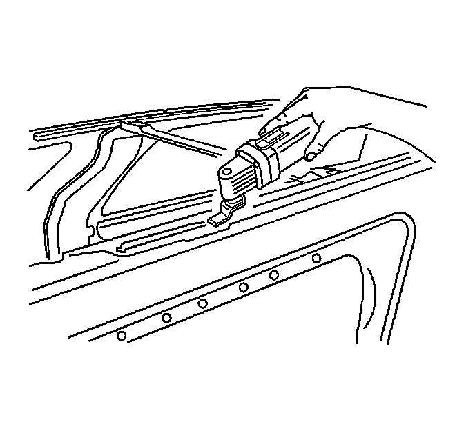
19. Using J 39040 with the scraper blade, scrape all of the adhesive from the side pinch-weld flanges.
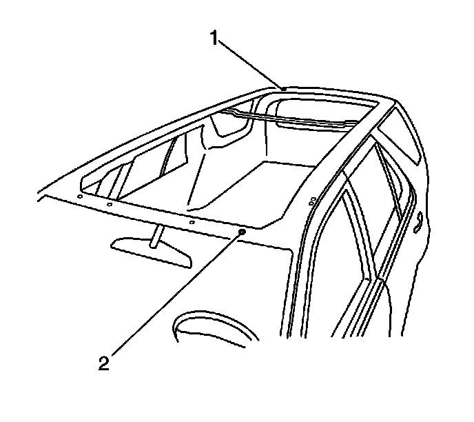
20. Ensure that the left front net hole (2) and the right rear corner alignment hole (1) are cleared of debris for installation of the new sunroof module.
Installation Procedure
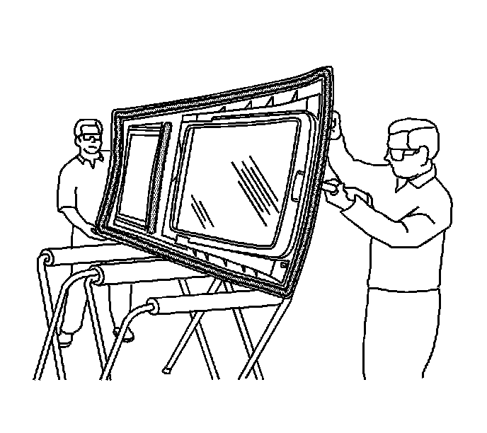
Important: The bonding surfaces and the material must be at least 15°C (60°F) for proper adhesion.
Important: The new sunroof component part includes windows but does not have the 6 exterior trim panels (1-6) attached. Apply the exterior covers after the installation of the sunroof. Refer to Sunroof Exterior Trim Cover Replacement (Front) (Sunroof Exterior Trim Cover Replacement (Front))Sunroof Exterior Trim Cover Replacement (Rear) (Sunroof Exterior Trim Cover Replacement (Rear))Sunroof Exterior Trim Cover Replacement (Rear Sides) (Sunroof Exterior Trim Cover Replacement (Rear Sides))Sunroof Exterior Trim Cover Replacement (Front Sides) (Sunroof Exterior Trim Cover Replacement (Front Sides)) .
1. With the aid of an assistant, position the sunroof on a padded surface.
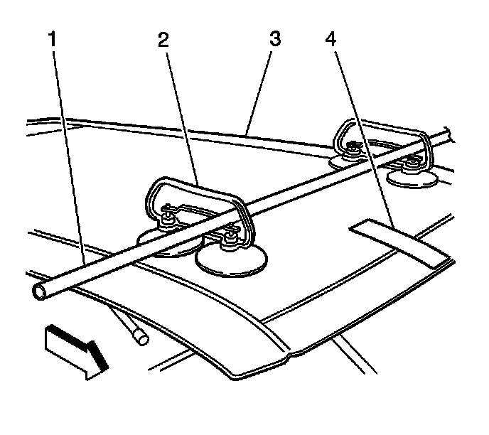
2. If you are bonding a full roof, refer to the next 3 procedures.
3. Install the dual cup suction cups (2) to the outer front edges (1, 3) of the front window panel.
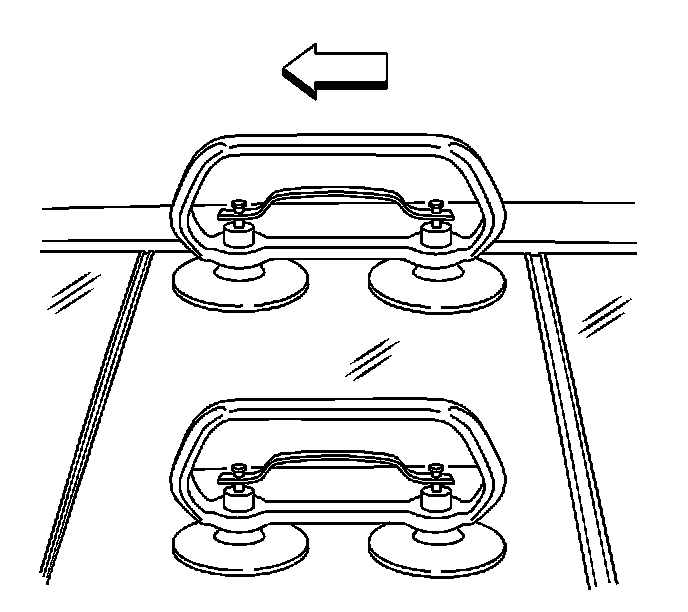
4. Install the dual cup suction cups to the center of the motor/actuator compartment window panel.
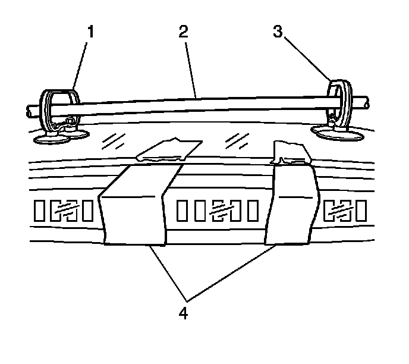
5. Install the dual cup suction cups (1, 3) to the outer rear edges of the rear vent window panel.
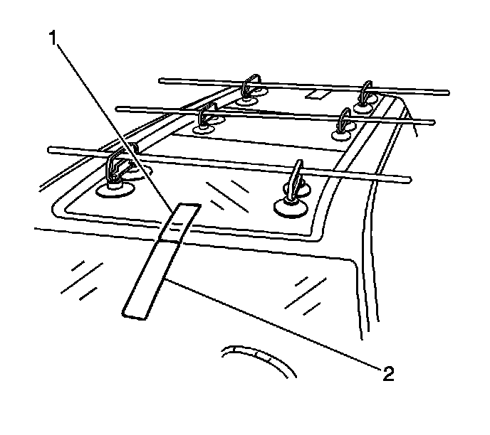
6. If you are bonding a half roof, install the dual cup suction cups to the following locations:
1. The outer front edges of the front window panel
2. The center of the motor/actuator compartment window panel
3. The center position of the rear stationary window panel
Important: Ensure that the suction cups are firmly attached prior to lifting the roof assembly.
7. With the aid of assistants, place the sunroof on the protected support work stands in vehicle position.
8. Carefully install three 25 mm (1 in) steel pipes, approximately 185 cm (6 ft) in length, through the suction cup handles in order to aid in the lifting and loading of the sunroof onto the body structure.
9. Dry fit the sunroof and apply masking tape (2) in order to locate the roof upon final installation.
10. From inside the vehicle, draw lines on both sides of the crossbow on the bottom side of the frame to guide the adhesive bead application.
11. Return the roof to the work stands.
12. Remove the steel pipes from the suction cups. Invert the roof with the window side downward.
Important: Do not apply top coat to any bonding surfaces. Use primer only on the bonding surface.
13. Clean and prepare any bare sheet metal. Follow the manufacturer's recommendations.
14. Scuff the bond areas of the vehicle with 180 or 200-grit sandpaper.
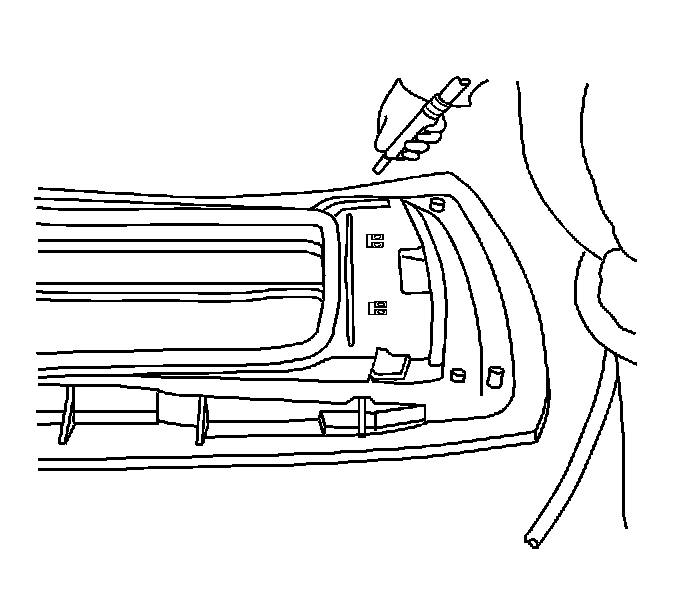
15. Use compressed air to remove any debris from the bonding area.
16. Using a clean lint-free cloth and Naphtha solvent, wipe the roof frame bond area. Allow 5-10 minutes for the Naphtha to evaporate.
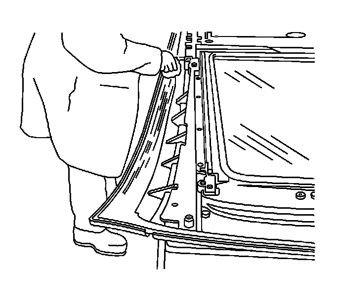
17. Using a clean lint-free cloth and Naphtha solvent, wipe the sunroof frame bond area again. Allow 5-10 minutes for the Naphtha to evaporate.
18. Ensure that the electrical harness for the sunroof motor/actuators is securely taped to the sheet mold compound (SMC) frame in front of the adhesive bead area for the center crossbow support. Ensure that the lace strings on the rear window closeout trim are taped to the rear sunroof window.
Caution: Do not attempt to dispose of unused/uncured adhesive material. Failure to observe the following procedure when disposing of unused/uncured plastic structural installation adhesive could cause personal injury.
* Wear an approved respirator, eye protection, rubber gloves, protective clothing,
* Dispose of unused/uncured adhesive by dispensing any unused/uncured adhesive onto a scrap piece of cardboard and allow to totally cure and discard into a proper trash receptacle.
19. Using a pneumatic adhesive dispensing gun GM P/N 285-LRD-304, or equivalent, with the air set at 30-35 psi, apply 127/EZ Plastic for adhesive GM P/N 89020330 (Canadian P/N 89020332), or equivalent, onto the SMC frame.
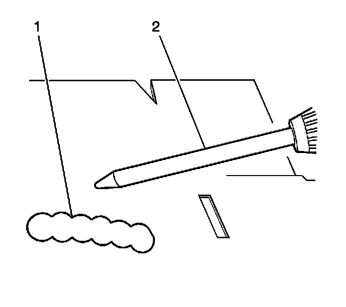
20. Dispense a small amount of bond material (1) to ensure that the material is mixing evenly through the mixing tube extension (2).
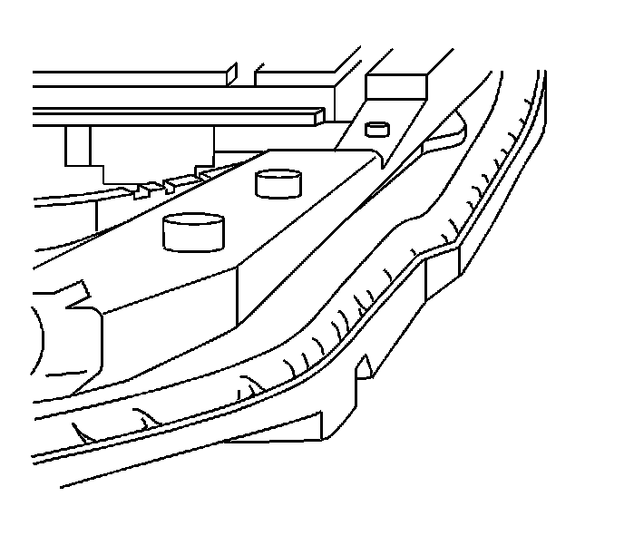
21. Dispense the adhesive material 5 mm (0.2 in) from the outer edge of the roof frame.
22. Run a continuous 10 mm (0.4 in) adhesive bead around the perimeter of the frame to ensure the correct coverage and prevent any water intrusion at the roof pinch-weld.
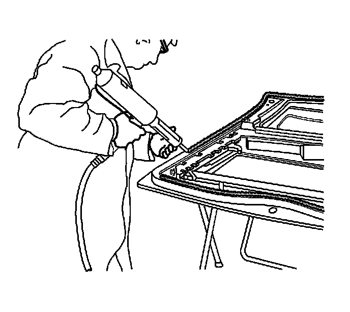
23. Dispense a 10 mm (0.4 in) high adhesive bead across the area of the frame that bonds to the crossbow between the 2 lines that were previously drawn.
24. With the aid of assistants, carefully position the sunroof right side up on the work stands.
Important: Do not touch any part of the adhesive bead.
25. Carefully install three 25 mm (1 in) steel pipes, approximately 185 cm (6 ft) in length, through the suction cup handles in order to aid in the lifting and loading of the sunroof onto the body structure.
26. With the aid of assistants, raise the sunroof and carefully place and hold the sunroof approximately 2 inches over the body structure.
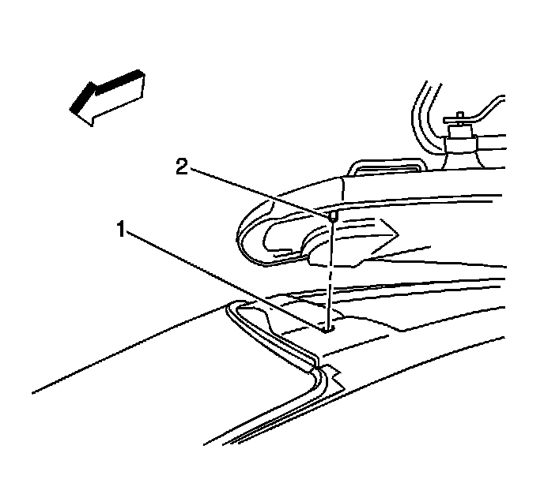
Important: Do NOT allow the sunroof adhesive bead to touch any part of the body until the front pin is aligned to the front index net hole. If any part of the bead separates, remove the entire bead from the roof module and the sheet metal ring, wipe the perimeter with Naphtha, and re-apply the adhesive bead.
27. With the aid of assistants, first line up the locator pin (2) in the front net hole (1) and then align the rear header hole at the rear corner of the outer sheet metal ring. Carefully lower the sunroof into position on the body.
28. Carefully remove the steel pipes and the suction cups.
29. Firmly apply pressure to the entire sealing edges of the sunroof assembly to create an even bond.
30. Allow 4-5 hours at a temperature of 21°C (70°F) before moving the vehicle, installing the headliner, or cleaning the roof window panels.
31. Allow the vehicle to remain stationary for 24 hours at 21°C (70°F) for the bond to attain full strength before putting the vehicle into service.
32. Install the windshield. Refer to Adhesive Installation of Stationary Windows (Adhesive Installation of Stationary Windows) .
33. Remove the masking tape which holds the electrical harness.
34. Connect the electrical harness connectors at the C-pillar area to the body harness connectors.
35. Connect the rear drain hoses. Refer to Sunroof Housing Rear Drain Hose Replacement (Removal and Replacement) .
36. Water test the sunroof for leaks.
37. Install the headliner. Refer to Headlining Trim Panel Replacement (Service and Repair) .
38. Pull the strings outward from the trim lace in order to position the trim lace to the headliner. Refer to Sunroof Opening Trim Finish Lace Replacement (Front) (Sunroof Opening Trim Finish Lace Replacement (Front))Sunroof Opening Trim Finish Lace Replacement (Rear) (Sunroof Opening Trim Finish Lace Replacement (Rear)) .
39. Install the front seats. Refer to Bucket Seat Replacement (Bucket Seat Replacement) .
40. Install the secondary seats. Refer to Rear Seat Replacement (Rear Seat Replacement) .
41. Install the folding seats. Refer to Rear Number 2 Folding Seat Replacement (Rear Number 2 Folding Seat Replacement) .
42. Install all of the roof exterior trim covers. Refer to Sunroof Exterior Trim Cover Replacement (Front) (Sunroof Exterior Trim Cover Replacement (Front))Sunroof Exterior Trim Cover Replacement (Rear) (Sunroof Exterior Trim Cover Replacement (Rear))Sunroof Exterior Trim Cover Replacement (Rear Sides) (Sunroof Exterior Trim Cover Replacement (Rear Sides))Sunroof Exterior Trim Cover Replacement (Front Sides) (Sunroof Exterior Trim Cover Replacement (Front Sides)) .
43. Install the luggage rack carrier. Refer to Luggage Carrier Rivet Nut Replacement (Luggage Carrier Rivet Nut Replacement) .
44. Verify the operation of the sunroof.